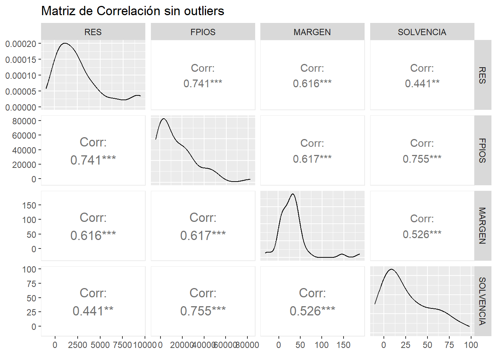
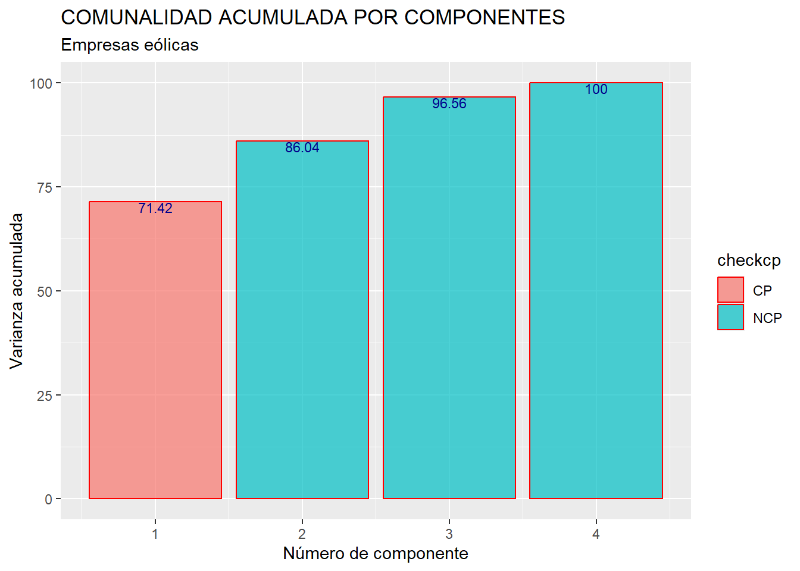
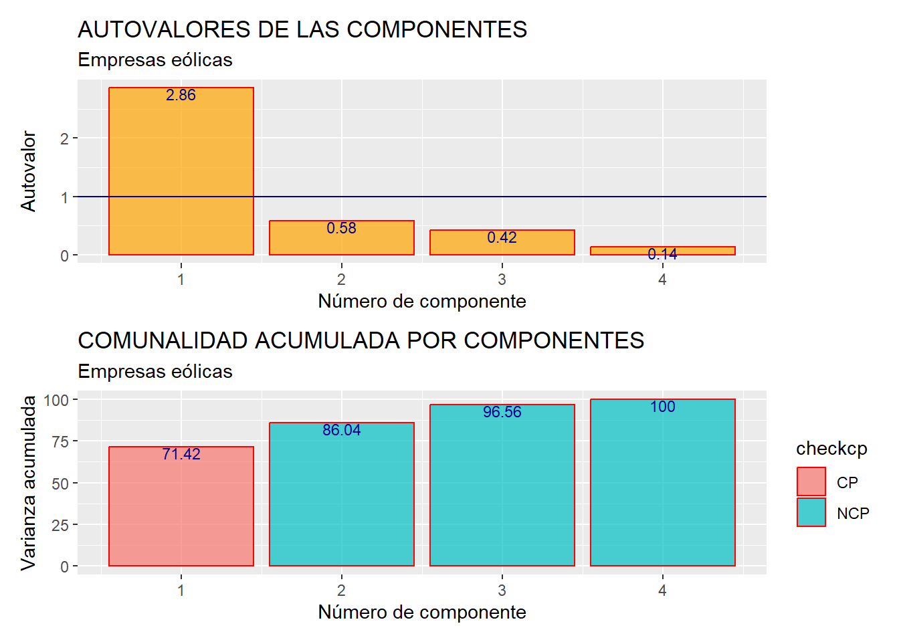

Capítulo 6 Componentes principales.
6.1 Introducción.
A veces, menos es más. Esta es la filosofía que subyace a las técnicas de reducción de la dimensión de la información.
Imaginemos una serie de casos (por ejemplo, las empresas de un sector económico) caracterizados por múltiples variables. Puede ocurrir que, paradójicamente, el contar con tantas variables haga difícil la caracterización de los casos. Esto ocurre cuando algunas de las variables aportan una información muy parecida sobre los mismos. Por ejemplo, es más difícil hacerse una idea del comportamiento global en el ámbito económico o financiero de un grupo de empresas si tenemos que atender a los valores que toman en un conjunto de 10 variables, que si solo tenemos que atender a un par de indicadores. Las técnicas de reducción de la dimensión de la información tratan, precisamente, de disminuir el número de variables necesarias para caracterizar un grupo de casos aprovechando la posibilidad de que las (múltiples) variables originales compartan información sobre los mismos. Es decir, la idea subyacente es pasar de un planteamiento basado en manejar muchas variables con información compartida o redundante (variables que “dicen lo mismo” sobre el comportamiento de los casos) a un planteamiento en el que hay menos variables, pero que no comparten información (variables que “dicen” cosas diferentes sobre el comportamiento de los casos). En este proceso es importante que la pérdida de información sea mínima, y que solo se pierda la información redundante o repetida.
La principal técnica de reducción de la dimensión de la información es la de componentes principales, y es la que se expondrá y ejemplificará en el resto del capítulo. Pero antes, es preciso concretar la relación entre dos conceptos muy presentes en esta técnica: información y varianza.
6.2 Información y varianza.
En el apartado anterior hemos hablado de la posibilidad de que algunas variables compartan “información” sobre el comportamiento de los casos que constituyen nuestra muestra u objeto de estudio. Pero, ¿qué es, en este contexto, la “información”?
La información que una variable contiene sobre un conjunto de casos puede entenderse como su capacidad para diferenciar a unos casos de otros.
Observemos este ejemplo, en el que se representan los valores que toman un grupo de 20 empresas en 3 variables.

En la variable 1, todas las empresas toman el mismo valor. Por tanto, la capacidad que tiene la variable para distinguir a los casos (empresas), unos de otros, es nula. Eso es debido a que, en definitiva, esta variable no contiene información sobre el grupo de 20 empresas.
En la variable 2, existe cierta dispersión, aunque reducida, en los valores que adoptan los casos. Esto permite distinguir a unos de otros, aunque a veces con cierta dificultad. Por ejemplo, la empresa 17 se distingue del resto por ser la que tiene un valor (un poco) mayor. Aun así, como la dispersión es reducida, no se distinguen algunos casos de otros demasiado bien. En definitiva, la variable 2 contiene cierta cantidad de información sobre el conjunto de empresas de la muestra, aunque no demasiado grande.
Por último, la variable 3 muestra una dispersión considerablemente mayor que las otras dos variables. Existe un amplio abanico de valores que toman los diferentes casos (empresas). Esto hace que puedan diferenciarse con facilidad, en general, unos de otros. Esta variable posee, por tanto, una cantidad de información superior respecto a las empresas, ya que observando los valores que toman en la variable pueden diferenciarse con facilidad unas de otras.
Como conclusión, podemos establecer que cuanto mayor dispersión muestra una variable para un grupo de casos, mayor cantidad de información contiene sobre ellos, en el sentido de disfrutar de un mayor “poder” de diferenciación de unos casos respecto a otros.
Una medida de la dispersión de una variable usualmente utilizada es la varianza. Por tanto, en cierta manera, la varianza sirve para medir la cantidad de información que contiene la variable: a mayor varianza, mayor dispersión. Y a mayor dispersión, mayor cantidad de información.
En el ejemplo, puede observarse cómo la variable 3 es la que mayor varianza tiene, luego la variable 2, y la variable 1 tiene una varianza de 0 (y no posee información sobre las 20 empresas). Esta comparación de varianzas es válida siempre y cuando las tres variables estén expresadas en las mismas unidades, ya que la varianza es una medida de dispersión absoluta. Por ello, para poder comparar, hemos añadido también en el ejemplo una medida de dispersión relativa: el coeficiente de variación. Podemos comprobar cómo el mayor coeficiente de variación pertenece a la variable 3 (que es la que tiene una mayor cantidad de información), luego la variable 2 (que cuenta con menor cantidad de información), y por último la variable 1, con un coeficiente de 0 (no contiene información sobre las empresas).
6.3 Cálculo de componentes.
Vamos a considerar una serie de variables (en escala métrica) que caracterizan a la población de empresas de producción eléctrica mediante tecnología eólica en lo referente a la idea de “solidez del negocio”. Hemos seleccionado una muestra de 60 empresas. Nuestro objetivo es obtener una combinación lineal de estas variables (“componente principal”) que recoja la mayor parte de la suma de varianzas de las variables originales (“comunalidad”), de manera que pueda usarse como un indicador que resume o sintetiza el grado de solidez del negocio de cada empresa, con una pérdida mínima de información.
Las variables a partir de las cuales construiremos el indicador (“componente principal”) son:
RES: Resultado del ejercicio.
FPIOS: Fondos propios.
MARGEN: Margen de beneficio.
SOLVENCIA: Coeficiente de solvencia.
Vamos a suponer que trabajamos dentro de un proyecto que hemos creado previamente, de nombre “componentes”. Dentro de la carpeta del proyecto guardaremos el script llamado “componentes_eolica.R”, y el archivo de Microsoft® Excel® llamado “eolica_60.xlsx”. Si abrimos este último archivo, comprobaremos que se compone de tres hojas. La primera muestra un mensaje sobre el uso de los datos, la segunda recoge la descripción de las variables consideradas, y la tercera (hoja “Datos”) almacena los datos que debemos importar. Estos datos se corresponden con diferentes variables económico-financieras de 60 empresas productoras de electricidad mediante generación eólica.
Es muy importante observar que existen variables con datos faltantes (missing values). En concreto, podemos identificar estas faltas de dato por la existencia de celdas en blanco; pero también por la existencia de celdas con el texto “n.d.” (no dato). Así, tendremos que aplicar código adicional en el comando de importación de R para que estos casos queden correctamente recogidos como NAs (not available).
Cerraremos el archivo de Microsoft® Excel®, “eolica_60.xlsx” y volveremos a RStudio. Después, abriremos nuestro script “componentes_eolica.R”. Este script contiene el programa que vamos a ejecutar en lel ejemplo.
La primera línea / instrucción en el script es:
La instrucción tiene como objeto limpiar el Environment (memoria) de objetos de anteriores sesiones de trabajo. Para importar los datos almacenados en la hoja “Datos” del archivo “eolica_60.xlsx”, ejecutaremos el código:
Podemos observar cómo, en el Environment, ya aparece un objeto. Este objeto es una estructura de datos tipo data frame, se llama “datos” y contiene 12 columnas, una por cada una de las variables almacenadas en el archivo de Microsoft® Excel®. De estas variables, tres son de tipo cualitativo (atributos o factores), formadas por cadenas de caracteres: el nombre de la empresa (NOMBRE), el nombre de la sociedad matriz (grupo empresarial) a la que pertenece (MATRIZ), y el tamaño de dicho grupo de empresas (DIMENSION).
R ha considerado la primera columna de la hoja de Excel (NOMBRE) como una variable de tipo cualitativo o atributo. En realidad no es una variable; sino el nombre de los casos (empresas). Para evitar esto, podemos redefinir nuestro data frame diciéndole que esa primera columna contiene los nombres de los casos (filas):
En la línea anterior hemos asignado al data frame “datos” los propios datos de “datos”; pero indicando que la primera columna no es una variable; sino el nombre de los casos o filas (empresas). Advertimos que ya no aparece NOMBRE como variable, y que en el Environment ya aparece el data frame “datos” con 60 observaciones, pero con 11 variables (una menos).
Como en el ejemplo se plantea construir un indicador basado en las 4 variables antes indicadas (RES, FPIOS, MARGEN y SOLVENCIA), crearemos un data frame con solo esas variables. Lo llamaremos, por ejemplo, “muestra”:
# Seleccionando variables metricas para el analisis.
library(dplyr)
muestra <- datos %>% select(RES, FPIOS, MARGEN, SOLVENCIA)
summary (muestra)## RES FPIOS MARGEN SOLVENCIA
## Min. :-5661 Min. :-77533 Min. :-302.03 Min. :-40.74
## 1st Qu.: 496 1st Qu.: 2323 1st Qu.: 11.70 1st Qu.: 5.94
## Median : 1939 Median : 9727 Median : 27.64 Median : 16.88
## Mean : 2699 Mean : 18801 Mean : 30.63 Mean : 28.12
## 3rd Qu.: 3903 3rd Qu.: 26493 3rd Qu.: 39.59 3rd Qu.: 51.38
## Max. :17026 Max. :177707 Max. : 400.90 Max. : 99.08
## NA's :1 NA's :1 NA's :2 NA's :1El siguiente paso será localizar los posibles missing values, ya que para obtener componentes principales es necesario que todos los casos posean dato para todas las variables del análisis. Para tener una idea general, se puede utilizar la función vis_miss() del paquete {visdat}, que localizará gráficamente los missing values de las diferentes variables, y calculará el porcentaje de casos que supone, con respecto al total de observaciones:

Del gráfico anterior se desprende que existen 5 missing values repartidos en las 4 variables del estudio. Para localizarlos, podemos filtrar nuestro data frame con las herramientas de {dplyr}:
muestra %>%
filter(is.na(RES) | is.na(FPIOS) | is.na(MARGEN) | is.na(SOLVENCIA)) %>%
select(RES, FPIOS, MARGEN, SOLVENCIA) ## RES FPIOS MARGEN SOLVENCIA
## Biovent Energia SA NA 70033.0000 22.792 38.082
## Eolica La Janda SL 9880.09100 NA 38.256 16.428
## Parc Eolic Sant Antoni SL 668.00000 9727.0000 NA 13.964
## WPD Parque Eolico El Poleo SL. -30.63754 520.6033 -11.121 NA
## Eolica La Brujula SA 2306.06200 21694.7910 NA 51.474Ante la existencia de missing values, se puede actuar de varios modos. Por ejemplo, se puede intentar obtener por otro canal de información el conjunto de valores que no están disponibles, o recurrir a alguna estimación. En caso de que esto sea difícil, se puede optar, simplemente, por eliminar estos casos, en especial cuando representan un porcentaje muy reducido respecto al total de casos. En nuestro ejemplo, supondremos que hemos optado por esta última vía, y eliminaremos estos casos con el código:
Verificamos en el Environment que el data frame “muestra” ha pasado a tener 53 casos.
Por otro lado, la técnica de componentes principales es muy sensible a la existencia de outliers. En consecuencia, deberán ser identificados y, en su caso, eliminados. Para realizar este proceso, y dado que en nuestro análisis contamos con 4 variables, primero “resumiremos” el valor que toman dichas variables para cada observación (empresa), mediante el cálculo de la distancia de Mahalanobis. De hecho, las distancias de los diferentes casos se almacenarán en una nueva columna o variable de nuestro data frame, a la que llamaremos MAHALANOBIS:
muestra <- muestra %>%
mutate (MAHALANOBIS = mahalanobis(cbind(RES, FPIOS, MARGEN, SOLVENCIA),
center = colMeans(select(., RES, FPIOS, MARGEN, SOLVENCIA)),
cov = cov(select(., RES, FPIOS, MARGEN, SOLVENCIA))))Dentro de las funciones select() hay unos puntos. Recordemos que estos puntos deben ser añadidos cuando una función no es la primera del operador “pipe” (%>%), para indicar que las variables de los paréntesis hacen referencia al data frame “muestra” (o, en general, el objeto que fluye a través del “pipe”).
A continuación, construiremos un diagrama de caja de la variable MAHALANOBIS, como si fuera cualquier otra variable, a partir de la función ggplot() del paquete {ggplot2}:
library (ggplot2)
ggplot(data = muestra, map = (aes(y = MAHALANOBIS))) +
geom_boxplot(fill = "orange") +
ggtitle("DISTANCIA DE MAHALANOBIS", subtitle = "Empresas eólicas") +
ylab("MAHALANOBIS")En el gráfico se observa que existen, por encima de la caja, varios outliers. Para identificarlos de modo concreto, hemos de calcular los cuartiles primero y tercero de la variable MAHALANOBIS y pasar el correspondiente filtro:
Q1M <- quantile (muestra$MAHALANOBIS, c(0.25))
Q3M <- quantile (muestra$MAHALANOBIS, c(0.75))
muestra %>%
filter(MAHALANOBIS > Q3M + 1.5*IQR(MAHALANOBIS) |
MAHALANOBIS < Q1M - 1.5*IQR(MAHALANOBIS))%>%
select(MAHALANOBIS)## MAHALANOBIS
## Viesgo Renovables SL. 35.05290
## Guzman Energia SL 10.31024
## WPD Wind Investment SL. 21.69461
## Molinos Del Ebro SA 24.38816
## Tarraco Eolica SA 21.91118
## WPD Parque Eolico Las Panaderas SL. 8.21836
## Eolica Navarra SL 13.41478Si, tras el estudio de los valores que toman las variables originales en estos casos, se decide eliminarlos, el código será:
muestra_so <- muestra %>%
filter(MAHALANOBIS <= Q3M + 1.5*IQR(MAHALANOBIS) &
MAHALANOBIS >= Q1M - 1.5*IQR(MAHALANOBIS))
muestra_so <- muestra_so %>% select(-MAHALANOBIS)Se ha creado un nuevo data frame llamado “muestra_so” con los casos que no son outliers (y que no contienen missing values), y se ha eliminado la variable MAHALANOBIS, puesto que su única utilidad era la de localizar y filtrar los outliers. Con este data frame “muestra_so” es con el que se procederá al cálculo de las componentes.
La condición previa para el cálculo de componentes es que las variables originales del análisis contengan información redundante, es decir, que en buena medida aporten una “misma información” sobre los casos (empresas). Esto se verifica con la existencia de altas correlaciones entre las variables (al menos, entre algunas de ellas). Por tanto, hemos de calcular la matriz de correlaciones correspondiente. Un modo gráfico visualmente efectivo es utilizar las posibilidades que nos ofrece el paquete {GGally} mediante la función ggpairs():
# Correlaciones.
library (GGally)
corr_plot_so <- ggpairs(muestra_so,
lower = list(continuous = wrap("cor",
size = 4.5,
method = "pearson",
stars = TRUE)),
title = "Matriz de Correlación sin outliers")
corr_plot_so
Puede apreciarse cómo existen altas correlaciones (en valor absoluto) entre todas las variables. Por tanto, tiene sentido hacer un análisis de componentes principales, ya que hay variables que parecen compartir información.
La obtención de las componentes se va a realizar mediante la función prcomp(). Es conveniente que activemos el argumento scale = con “T” (true) para que las variables originales sean consideradas en sus versiones tipificadas. Vamos a asignar los resultados a un objeto de nombre, por ejemplo, “componentes”. Por último, guardaremos el summary() o resumen de los resultados con un nombre provisional, por ejemplo, “temporal”. El código es el siguiente:
# Obtencion de componentes.
componentes <- prcomp (muestra_so, scale=T)
temporal <- summary (componentes)
temporal## Importance of components:
## PC1 PC2 PC3 PC4
## Standard deviation 1.6903 0.7646 0.6487 0.3709
## Proportion of Variance 0.7143 0.1462 0.1052 0.0344
## Cumulative Proportion 0.7143 0.8604 0.9656 1.0000La “Standard deviation” es la raíz cuadrada de los autovalores asociados a cada componente. “Proportion of Variance” nos dice la proporción de la suma de varianzas de las variables originales (comunalidad) recogida por cada componente, proporción que se acumula en “Cumulative Proportion”. Nótese que las componentes aparecen ordenadas de más a menos importantes en función de la cantidad de varianza que capturan. En este caso, la primera componente acumula más del 71% de la varianza (comportamiento) de las variables originales. Por tanto, esta primera componente resume bastante bien la información que las 4 variables originales contienen sobre los casos (empresas).
Si el elemento “importance” del summary() o resumen “temporal” lo convertimos en un data frame, por ejemplo “summary_df”, podremos presentar los resultados por medio de una tabla estéticamente más atractiva, a partir de la función kable() del paquete {knitr}, y las funciones complementarias del paquete {kableExtra}:
# Convertir el resumen en un data frame
summary_df <- as.data.frame(temporal$importance)
summary_df <- t(summary_df) # Transponer para mejor visualización
rm (temporal)
# Crear la tabla con kable y personalizarla con kableExtra
library (knitr)
library (kableExtra)
knitr.table.format = "html"
summary_df %>%
kable(caption = "Resumen de Componentes",
col.names = c("Desviación típica","Proporción de varianza (comunalidad)",
"Proporción de varianza (comunalidad) acumulada"),
format.args = list(decimal.mark = ".", digits = 4)) %>%
kable_styling(bootstrap_options = c("striped", "bordered", "condensed"),
full_width = F,
position = "center") %>%
row_spec(0, bold= T, align = "c") %>%
row_spec(1:(nrow(summary_df)), bold= F, align = "c") %>%
column_spec(1, bold = TRUE, extra_css = "text-align: left;")| Desviación típica | Proporción de varianza (comunalidad) | Proporción de varianza (comunalidad) acumulada | |
|---|---|---|---|
| PC1 | 1.6903 | 0.7143 | 0.7143 |
| PC2 | 0.7646 | 0.1462 | 0.8604 |
| PC3 | 0.6487 | 0.1052 | 0.9656 |
| PC4 | 0.3709 | 0.0344 | 1.0000 |
Los coeficientes o cargas de cada componente se obtienen pidiendo a nuestro objeto “componentes” el elemento “rotation”. Estas cargas las vamos a guardar en un nuevo objeto que llamaremos, por ejemplo, “cargas”, que presentaremos mediante una pequeña tabla diseñada con la función kable() del paquete {knitr} y otras funciones del paquete {kableExtra}:
# Cargas de cada componente.
cargas <- componentes$rotation
cargas %>%
kable(caption = "Cargas de las componentes obtenidas",
format.args = list(decimal.mark = ".", digits = 4)) %>%
kable_styling(full_width = F, bootstrap_options = "striped",
"bordered", "condensed",
position = "center") %>%
row_spec(0, bold= T, align = "c") %>%
row_spec(1:(nrow(cargas)), bold= F, align = "c") %>%
column_spec(1, bold = TRUE, extra_css = "text-align: left;")| PC1 | PC2 | PC3 | PC4 | |
|---|---|---|---|---|
| RES | 0.4915 | 0.5578 | 0.48460 | 0.46094 |
| FPIOS | 0.5491 | -0.1554 | 0.33515 | -0.74971 |
| MARGEN | 0.4803 | 0.3406 | -0.80447 | -0.07849 |
| SOLVENCIA | 0.4758 | -0.7407 | -0.07528 | 0.46830 |
A partir de las cargas se pueden explicitar las ecuaciones correspondientes a cada componente. Por ejemplo, para la primera componente, la ecuación será:
\[ \text{CP}_{i1} = 0.4915 \cdot \text{RES}_{i1} + 0.5491 \cdot \text{FPIOS}_{i1} + 0.4803 \cdot \text{MARGEN}_{i1} + 0.4758 \cdot \text{SOLVENCIA}_{i1} \] Puede apreciarse que, en cuanto a la primera componente, que es la que especialmente nos interesa como “indicador” de la “solidez del negocio” en el caso de las empresas eólicas seleccionadas, las 4 cargas tienen signo positivo, lo que implica que, cuanto mayores sean los valores de una empresa en las varibles RES (resultado), FPIOS (fondos propios), MARGEN (margen de beneficio) y SOLVENCIA (coeficiente de solvencia), mayor será el valor ndel indicador y, por tanto, la solidez del negocio. Además, como las variables fueron tipificadas, el valor de las cargas son comparables. De este modo, vemos cómo, dentro de la primera componente, que es la que adoptamos como “indicador de solidez”, la mayor importancia la tiene el valor de los fondos propios de la empresa, seguido del resultado del ejercicio, el margen y la solvencia.
6.4 Retención de componentes principales.
La etapa de retención de componentes principales consiste en decidir cuántas de las componentes generadas (recordemos que, en un principio, se calculan tantas componentes como variable originales) consideramos que resumen de un modo aceptable la información contenida en las variables originales. Estas componentes “retenidas” se convertirán en las componentes principales.
La primera componente siempre es retenida y, por tanto, es una “componente principal”. El resto, que van capturando proporciones cada vez más pequeñas de la varianza común de las variables originales (comunalidad), podrán o no retenerse; aunque, siempre, la retención de una componente implica que se han retenido todas las anteriores.
Hay varios procedimientos o criterios para tomar la decisión de cuántas componentes retener. Uno de ellos, comúnmente aplicado, es el de retener aquellas componentes cuyo autovalor es mayor que 1 (suponiendo que se ha trabajado con las variables en sus versiones tipificadas).
Los autovalores, como ya vimos, son el cuadrado del elemento “Standard deviation” (sdev) del objeto “componentes” que hemos generado a partir de la función prcomp(). Hemos creado un data frame con estos autovalores calculados (y su orden, al que hemos llamado variable o columna “orden”, y que es un vector de números enteros consecutivos que va desde uno hasta número de variables originales o de componentes) y los hemos dispuesto en un gráfico de barras:
# Determinacion Componentes a retener.
# Criterio del Autovalor mayor que 1.
orden <- c(1:ncol(muestra_so))
autovalor <- componentes$sdev^2
autovalores <- data.frame(orden, autovalor)
autograph <- ggplot(data = autovalores,
map = (aes(x = orden, y = autovalor))) +
geom_bar(stat = "identity",
colour = "red",
fill = "orange",
alpha = 0.7) +
scale_x_continuous(breaks=c(1:nrow(autovalores)))+
geom_hline(yintercept = 1, colour = "dark blue") +
geom_text(aes(label = round(autovalor,2)),
vjust = 1, colour = "dark blue", size = 3) +
ggtitle("AUTOVALORES DE LAS COMPONENTES",
subtitle = "Empresas eólicas") +
xlab ("Número de componente") +
ylab("Autovalor")
autographRespecto al gráfico, conviene recordar que, al ser un gráfico de barras, si no se quieren representar las frecuencias sino los valores que toma una variable (en este caso, “autovalor”) para cada valor de la otra variable (en este caso, “orden”); en el geom_bar() habrá que añadir el argumento stat = con el valor “identity”. Además, se utiliza el elemento scale_x_continuous() para pesonalizar la escala del eje x, y que se divida dicho eje en tantos tramos como componentes hay.
En el gráfico obtenido se advierte que solo el primer autovalor es mayor que 1, por lo que solo se retendrá la primera componente, que será la única componente principal. Nuestro objetivo era, de todos modos, obtener un único indicador (de “solidez del negocio”) que resuma la información contenida en las cuatro variables RES, FPIOS, MARGEN y SOLVENCIA, por lo que, aunque hubiera habido más componentes con autovalor mayor que uno, solo hubiéramos seleccionado la primera. No obstante, este resultado es positivo para nuestros intereses, ya que reafirma la idea de que únicamente con la primera componente se recoge una gran proporción de la comunalidad o varianza conjunta (comportamiento) de las 4 variables, luego es un buen resumen global de las mismas. Esto ya se vio anteriormente al hacer summary (componentes), aunque se puede representar gráficamente con el siguiente código:
# Determinar si cada autovalor es mayor o igual a 1
autovalores <- autovalores %>%
mutate(variacum = 100*(cumsum((autovalor/nrow(autovalores)))))
checkcp <- ifelse(autovalores$autovalor >= 1, "CP", "NCP")
checkcp## [1] "CP" "NCP" "NCP" "NCP"vacumgraph <- ggplot(data = autovalores, map = (aes(x = orden,
y = variacum,
fill = checkcp))) +
geom_bar(stat = "identity", colour = "red", alpha = 0.7) +
scale_x_continuous(breaks=c(1:nrow(autovalores)))+
geom_text(aes(label = round(variacum,2)), vjust = 1,
colour = "dark blue", size = 3) +
ggtitle("COMUNALIDAD ACUMULADA POR COMPONENTES",
subtitle = "Empresas eólicas") +
xlab ("Número de componente") +
ylab("Varianza acumulada")
vacumgraph
Para obtener el gráfico anterior, se comienza añadiendo al data frame “autovalores” una columna o variable que es la suma acumulada del porcentaje de comunalidad recogido por las sucesivas componentes, que están ordenadas de mayor a menor autovalor. Para calcular el porcentaje, se usa la función cumsum(), y se tiene en cuenta que, como las variables fueron tipificadas para calcular las componentes, la comunalidad, que coincide con la suma de las varianzas de las componentes (autovalores), es igual al número de variables o componentes (valor que toma la función nrow()).
Después, se ha creado un vector que contiene tantos elementos como variables o componentes hay en el análisis (vector “checkcp”). Con la función condicional ifelse() se consigue que los elementos de “checkcp” sean “CP” o “NCP” según los correspondientes autovalores sean mayores o no que 1. Finalmente, según sea el valor de cada elemento de “checkcp”, las barras del gráfico se colorearán de uno u otro modo.
Posteriormente, mediante el paquete {patchwork}, se han unido los dos gráficos creados en esta fase, poniendo uno debajo del otro:

6.5 Puntuaciones de los casos (scores)
Para obtener las puntuaciones de cada caso (empresa) en el indicador de “solidez del negocio” (y que es nuestra componente principal, que a su vez coincide con la primera componente), simplemente debemos tener en cuenta que tales puntuaciones están guardadas en la matriz “x” del objeto prcomp() creado. Vamos a renombrar a las primera columna (componente) de esta matriz como “scores” y vamos a ver las puntuaciones de las empresas, que volcaremos en una tabla, junto al valor que toman en las variables originales, recolocando las filas (empresas) de mayor a menor valor de la puntuación (lo que se consigue mediante la función arrange() del paquete {dplyr}:
# Scores.
scores <- componentes$x[,1] #tantas columnas como componentes retenidas
scores_df <- as.data.frame(scores)
scores_df <- cbind(scores_df,muestra_so)
scores_df %>%
arrange(desc(scores)) %>%
kable(caption = "Puntuaciones de las componentes obtenidas",
col.names = c("Empresa", "Puntuación", "Resultado", "F. Propios",
"Margen", "Solvencia"),
format.args = list(decimal.mark = ".", digits = 4)) %>%
kable_styling(full_width = F, bootstrap_options = "striped",
"bordered", "condensed",
position = "center", font_size = 12) %>%
row_spec(0, bold= T, align = "c") %>%
row_spec(1:(nrow(scores_df)), bold= F, align = "c") %>%
column_spec(1, bold = TRUE, extra_css = "text-align: left;")| Empresa | Puntuación | Resultado | F. Propios | Margen | Solvencia |
|---|---|---|---|---|---|
| Eolia Gregal De Inversiones SA. | 6.34608 | 9420.00 | 81778.0 | 186.208 | 79.196 |
| Elecdey SL | 3.55316 | 5539.03 | 41042.3 | 144.924 | 65.208 |
| CYL Energia Eolica SL | 2.87125 | 9401.38 | 51821.6 | 37.795 | 51.290 |
| Esquilvent SL | 2.38469 | 9010.21 | 48769.1 | 39.476 | 30.938 |
| Disa Duna SL. | 2.35060 | 2594.40 | 42283.1 | 55.953 | 98.303 |
| Parques Eolicos San Lorenzo SL | 2.11047 | 4311.98 | 37396.2 | 36.810 | 89.806 |
| Insular De Aguas De Lanzarote SA | 1.86856 | 4159.91 | 28249.3 | 57.138 | 76.913 |
| Sierra De Selva SL | 1.42059 | 4525.00 | 19555.0 | 47.045 | 70.524 |
| Naturgy Wind, S.L. | 1.31880 | 8500.00 | 28418.0 | 39.575 | 10.388 |
| Parques Eolicos De Cerrato SL | 1.26532 | 6541.00 | 22817.0 | 44.755 | 34.878 |
| Eolica De Rubio SL | 0.91962 | 2693.00 | 25486.0 | 34.607 | 60.688 |
| Brulles Eolica SL | 0.88594 | 3540.57 | 16432.0 | 47.227 | 55.284 |
| Sistemas Energeticos Valle De Sedano SA | 0.88563 | 897.00 | 45733.0 | 4.327 | 66.896 |
| Acciona Eolica Del Levante SL | 0.65681 | 6853.00 | 21769.0 | 27.520 | 11.557 |
| BON Vent De Corbera S. L. EN Constitucion | 0.65640 | 3261.47 | 23095.6 | 36.607 | 41.453 |
| Molinos De La Rioja Sociedad Anonima | 0.56574 | 2371.00 | 15787.0 | 42.017 | 54.789 |
| Desarrollo De Energias Renovables De La Rioja Sociedad Anonima | 0.48954 | 2145.00 | 17441.0 | 27.297 | 62.005 |
| Eolica Campollano SA | 0.48574 | 2592.20 | 27217.6 | 25.327 | 40.630 |
| Bajoz Eolica SL | 0.39866 | 2620.34 | 9641.3 | 70.476 | 29.644 |
| Parc Eolic De Vilalba Dels Arcs SL | 0.02524 | 2454.07 | 9438.7 | 48.378 | 28.085 |
| Empordavent SL | -0.04223 | 2582.00 | 15176.0 | 32.635 | 25.295 |
| Al-Andalus Wind Power SL | -0.07062 | 4403.21 | 21466.1 | 12.582 | 8.591 |
| Eolica Fontesilva SL | -0.07618 | 1584.33 | 15524.1 | 27.756 | 37.786 |
| Eolica 2000 SL | -0.56288 | 1713.00 | 5765.0 | 37.852 | 16.878 |
| Fergo Galicia Vento -P E Mondoñedo SL | -0.64177 | 2288.50 | 4159.3 | 30.405 | 14.925 |
| Renovables Castilla La Mancha S.A. | -0.68969 | 1847.03 | 2902.4 | 39.595 | 11.635 |
| Comiolica SL | -0.73350 | 1938.69 | 4404.7 | 29.295 | 13.845 |
| Drago Renovables SL | -0.78124 | 1000.92 | 7735.3 | 20.826 | 22.401 |
| Parque Eolico La Boga SL. | -0.79622 | 11.94 | 29316.8 | 1.001 | 9.646 |
| Parque Eolico Santa Catalina SL | -0.81797 | 3645.28 | -1664.8 | 31.780 | -1.126 |
| Parque Eolico Valcaire SL | -0.84931 | 1152.72 | 2173.0 | 45.881 | 5.981 |
| Energias Renovables De Peñanebina SL | -0.88259 | 983.00 | 5231.0 | 25.939 | 16.901 |
| Expertise EN Energias Renovables Eolica Y Fotovoltaica De Canarias SL | -0.96396 | 52.30 | 4916.5 | 34.569 | 15.809 |
| Parque Eolico Tesosanto SL | -1.10299 | 1706.13 | 2842.2 | 21.008 | 4.249 |
| Eolica Del Guadiana SL | -1.20211 | 1571.57 | 4430.2 | 9.341 | 6.671 |
| Suresa Retama S.L. | -1.24341 | -78.00 | 12892.0 | -29.295 | 39.249 |
| Elecdey Palencia S.L. | -1.25359 | 987.27 | 1581.5 | 22.016 | 4.760 |
| Eolica Mirasierra SL | -1.36573 | 1123.48 | 995.8 | 17.064 | 1.780 |
| Helios Patrimonial 1 SL | -1.50762 | 237.85 | 3468.1 | 5.379 | 8.411 |
| Sistemes Energetics Conesa I S.L. | -1.56230 | 878.00 | -988.0 | 16.649 | -3.193 |
| Inversiones Fotovoltaicas Mallorquinas SL. | -1.57826 | 272.75 | 930.1 | 11.661 | 3.235 |
| Helios Patrimonial 2 SL | -1.60027 | 190.12 | 2472.1 | 4.315 | 6.145 |
| Fotovoltaica Los Navalmorales SL | -1.60453 | 143.00 | 966.0 | 12.228 | 2.581 |
| Energias Naturales La Calzada SL | -1.69272 | 754.00 | -1983.0 | 15.561 | -6.834 |
| Parque Eolico El Moral SL | -1.74511 | 267.00 | -310.0 | 7.935 | -1.240 |
| Eolica De Medinaceli SL | -1.91245 | 324.00 | -2854.0 | 4.302 | -4.142 |
| Wigep Andalucia SA | -2.05070 | 296.00 | -3762.0 | 4.611 | -10.634 |
| Parque Eolico Energia Puertosol SL. | -2.12892 | -945.38 | 2488.6 | -17.969 | 5.899 |
Las puntuaciones de los casos en nuestro indicador (componente principal) pueden integrarse en un data frame y ser utilizadas como cualquier otra variable en un análisis multivariante, sabiendo que este indicador asume gran parte de la información que, como caracterización de las distintas empresas, contenían las 4 variables originales.
6.6 Materiales para realizar las prácticas del capítulo.
En esta sección se muestran los links de acceso a los diferentes materiales (scripts, datos…) necesarios para llevar a cabo los contenidos prácticos del capítulo.
Datos (en formato Microsoft (R) Excel (R)):
- eolica_60.xlsx (obtener aquí)
Scripts:
- componentes_eolica.R (obtener aquí)